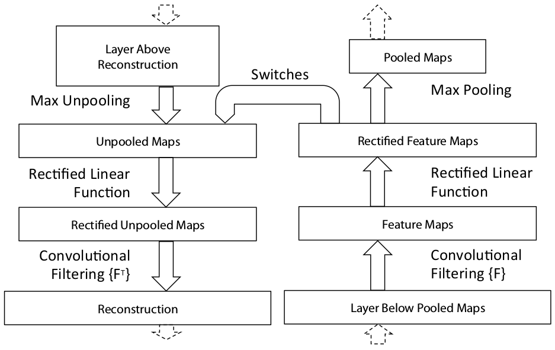

In this series of posts I will describe my ongoing project of understanding convolutional network by using various visualization methods described in previous literatures.
This first post will be about understanding deconvolution network [1] using VGG16 convolutional network architecture of [2], because both architectures are simple and straightforward yet have key ideas in the development of convolutional networks. In addition, I will describe a web user interface that is built for the convenience of the visualization.
This is just a first step for this project. In the future I will include more architectures for visualizing convolutional networks, including fully convonlutional networks [3] and atrous convonlution [4], as well as deeper convolutional networks like Inception and ResNet.
I will also add more functionality to the web user interface so that it can be as useful as [5] described in [6]. What I want to do differently in comparison with [5] is 1) I will use TensorFlow instead of Caffe, and 2) I will implement a web user interface using Flask instead of GUI, both for portability and for the purpose of putting it on a server as a web app so that anyone can try visualizing how a convolutional network works.
Architecture
The idea of a deconvolutional network is simple: considering a typical layer of a convolutional network that consists of a 2d convolution followed by a ReLU activation and then a max pooling. A deconvolutional network gets the output of the convolutional network as an input and produces a "reconstruction" of the input of the convolutional network, as shown in the following diagram borrowed from [1].
Unpooling
To do a deconvolution, first we need to "unpool" the max pooling, and for that purpose we need to record the locations of the "switches" of the max pooling, i.e. the "argmax" results of the max pooling. A figure from [1] illustrates this operation beautifully.
ReLU
The result of the unpooling then passes a ReLU. Because ReLU is not symmetric at all with respect to the preactivation, this pass is far from undoing the ReLU of the convolutional network. But I think it is required because we need to pass the unpooled result through a convolutional layer, which expects its input to have passed a ReLU layer.
Transposed convolution
Lastly, the rectified unpooled activations pass a 2d convonlutional layer with its filter flipped horizontally and vertically (i.e. rotated 180 degrees), which is called a transposed convolution. This implies that what we are doing is in some sense backpropagating activations along the pass of the convolution gradient backpropagation. For the detail of why this is so, see [7].
Deconvolution network for VGG16
To construct a deconvolutional network for the VGG16, what needs to be done is just repeating the above unit for every layer of the convolutional network, that is, we put an unpooling layer for a max pooling layer, a ReLU layer for a ReLU layer, and a transposed convolution for a convolutional layer, then inverts the direction of the propagation. As shown in the left of the above diagram, VGG16 consists of 5 blocks, each block containing multiple convolutional layers and a max pooling layer. Therefore from each block we get a set of max pooling switches when doing a forward propagation of an input image, which is provided as an input for each block of the deconvolutional network in addition to the reconstruction from the previous block of the deconvolutional network, as shown in the right of the above diagram. This is generated from the TensorFlow graph with 3 top features pushed through the deconvolutional network, hence 3 tensors in the dataflow.
The following diagrams show two blocks of VGG16 that have slightly different structures: block 1 & 2 have two convolutional layers, whereas block 3, 4, & 5 have three convolutional layers. For the detail see Table 1, column D of [2]. Note that here we only use the part of the VGG16 without the fully connected layers.
Full deconvolution in a single pass
The deconvolutional network shown in the above can output reconstructions from activations of a single layer. In order to generate reconstructions of multiple layers, it requires to pass the activations multiple times through the deconvolutional network. That is, if we want to generate reconstructions from both the activations of block 1 and those of block 2, we first push the block 1 activations through the block 1 backpropagation pass of the deconvolutional network, then push the block 2 activations through the block 2 and then block 1 backpropagation pass.
We can avoid doing this kind of multiple passes by bundling activations at every step while passing through the backpropagation route only once, which is shown in the left diagram. Note that the dataflow increses by multiple of 3, because we are reconstructing top 3 features from every block in this case. This enables us to run the full deconvolution faster, as we can run the graph on GPU once, thereby minimizing the data transfer between CPU and GPU. In comparison, to get the same deconvolutions by using the previous architecture we need to transfer data between CPU and GPU 5 times. But the previous architecture has its advantage in terms of the less maximum usage of GPU memory, as the full deconvolution in a single pass requires all the data to fit into the GPU memory at the same time, whereas the previous architecture requires just as much memory as it need for reconstructing from a single layer activations. We will discuss more detail later in Implementation.
One additional tensor has the value of the indices of the top features, which is picked out by tf.nn.top_k in the unpooling layer, as shown in the diagram for block 4.
Implementation
In this section we will describe the implementation of VGG16 and its deconvolutional network using TensorFlow, which can be found at the vgg16 branch of the GitHub repo.
Requirementes
- Python 3
- Tensorflow 1.0
- NumPy
- h5py
- pillow
- Flask (to use the web interface defined in visnet/web_api.py)
Using pretrained weights
Training a large convnet like VGG takes quite much time, so here we use pretrained weights provided by Keras, see WEIGHTS_PATH and WEIGHTS_PATH_NO_TOP defined in keras/applications/vgg16.py.
The weights are saved in HDF5 format and should be place at visnet/models. To take a look at the content of the file, it is helpful to use HDFView. In order to read HDF5 file from Python, we can use h5py to access the content via Python dictionaries like the following:
import h5py
weights_f = h5py.File(
weights_file_path,
mode='r',
)
# ...
dset_name = block_layer_name + '_W_1:0'
W = weights_f[block_layer_name][dset_name].value
Once we have the weights, it is straightforward to build a VGG16 convnet, see VisNet._build_forward_network defined in visnet/visnet.py for the detail of how to use the Keras weights file to build a TensorFlow graph for VGG16. But there is a caveat if we want to build a deconvnet in conjunction with the forward graph, which I will explain now.
Unpooling and device placement
As explained in "Unpooling", to construct a deconvnet we need to save switches of the max poolings while doing the forward propagation in the convolutional network. This is done by using tf.nn.max_pool_with_argmax in visnet/visnet.py. One thing to note, though, about tf.nn.max_pool_with_argmax is that this does not have a CPU kernel, meaning that this TensorFlow operation can be executed only on GPU. For example, if you installed a CPU version of TensorFlow, you cannot run it and instead will get the following error:
InvalidArgumentError (see above for traceback): Cannot assign a device to node 'forward_network/block1/pool/MaxPoolWithArgmax': Could not satisfy explicit device specification '/device:CPU:0' because no supported kernel for CPU devices is available.
Because of this lack of CPU kernel for the op, even when I want to put the most of the TensorFlow graph onto CPU, I had to place it on GPU by hand using tf.device like the following:
with tf.device('/cpu:0'):
# ...
with tf.device('/gpu:0'):
rv = tf.nn.max_pool_with_argmax(
prev_layer,
ksize=[1, 2, 2, 1],
strides=[1, 2, 2, 1],
padding='SAME',
)
Fortunately, nesting tf.device statements like the above works well.
Putting most of the calculation on CPU was needed when I wanted to run this code on a machine that has a very little amount of GPU memory. I wanted to use my old Macbook Pro as a web server to run this program as a WSGI application, because I needed a machine with a GPU but my current web server does not have a GPU. My Macbook Pro is a good machine with a quad-core i7, but its GPU is an old and small one, NVIDIA GeForce GT 650M with 1GB of memory. Still it can utilize CUDA 3.0, which is the minimum for running TensorFlow 1.0, which saved me from buying a graphic card for my server, however the small amount of GPU memory meant I had to be inventive in using the GPU. So I enabled putting most of the work on CPU, but tf.nn.max_pool_with_argmax had to be on GPU.
Actually, running most of the computation on CPU is not much slower than running most of the computation on GPU in this case, mainly for two reasons. One is that we are not requiring much calculation onto GPU, as we are not training the convnet but are just doing an inference and a small amount of backpropagation for the reconstruction through the deconvnet. Another reason is also related to a lack of the TensorFlow kernel for an operation, this time lack of a GPU kernel for tf.scatter_nd that is used in the TensorFlow graph of the deconvnet. The detail of building the graph of the deconvnet will be covered in "Building deconvolutional network", but without the detail we can easily guess that, because of the op, even when we run the most of the backpropagation through the deconvnet there needs to be a roundtrip transfer between CPU and GPU and that will cost us some performance. I was rather surprised that even though there is such a downside, still it is faster using GPU for the rest of the calculation when doing the deconvolution rather than putting everything on CPU, meaning that GPU computation is really fast and the transfer rate between CPU and GPU is quite reasonable.
To check the device placement of each TensorFlow op, we can use configuration option log_device_placement of the TensorFlow session in the following way:
# ...
with self._tf_graph.as_default():
config = tf.ConfigProto(
log_device_placement=True,
)
tf_session = tf.Session(config=config)
init = tf.global_variables_initializer()
tf_session.run(init)
# ...
With log_device_placement=True, we get the logging messages like the following,
... deconv_network/block1/pool/Reshape_1: (Reshape): /job:localhost/replica:0/task:0/gpu:0 I tensorflow/core/common_runtime/simple_placer.cc:841] deconv_network/block1/pool/Reshape_1: (Reshape)/job:localhost/replica:0/task:0/gpu:0 deconv_network/block1/pool/unpooled_flattened_0: (ScatterNd): /job:localhost/replica:0/task:0/cpu:0 I tensorflow/core/common_runtime/simple_placer.cc:841] deconv_network/block1/pool/unpooled_flattened_0: (ScatterNd)/job:localhost/replica:0/task:0/cpu:0 ...
which shows that indeed tf.scatter_nd is placed on CPU whereas tf.reshape is place on GPU.
Time comparison: full deconv vs loops, CPU vs GPU
In addition to using CPU vs GPU, as we discussed in "Full deconvolution in a single pass" there are two different graphs we can build for the deconvnet. Therefore there are four different usage scenarios, and let's compare the time it takes for each combination. The following is done on a machine with i7-7820HK CPU and GTX 1070 GPU (2048 CUDA cores), where
- "GPU" and "CPU" in the title means using mostly GPU and CPU, respectively,
- "full deconv" means the deconvnet TensorFlow graph is constructed using VisNet._build_full_deconv_network defined in visnet/visnet.py,
- "deconv loop" means the deconvnet TensorFlow graph is constructed using VisNet._build_deconv_network defined in visnet/visnet.py, then TensorFlow Session for the deconvolution is looped as many times as the number of layers to reconstruct in the following way:
# ...
print('Doing forward propagation and recording max pool switches...')
rd = vn.get_forward_results(
input_array,
log_device_placement=log_device_placement,
)
rd['deconv_layers'] = {}
for block_name, block_conf in config['network']:
for layer_name, layer_conf in block_conf:
block_layer_name = block_name + '_' + layer_name
print('Deconvolutioning {}...'.format(block_layer_name))
rd['deconv_layers'][block_layer_name] = vn.get_deconv_result(
block_name, layer_name,
log_device_placement=log_device_placement,
)
# ...
GPU, full deconv
%%timeit
# ...
rd = get_all_deconv_results(
input_image,
log_device_placement=False,
logdir='log',
num_top_features=3,
use_cpu=False,
full_deconv=True,
)
1 loop, best of 3: 1.5 s per loop
GPU, deconv loop
%%timeit
# ...
rd = get_all_deconv_results(
input_image,
log_device_placement=False,
logdir='log',
num_top_features=3,
use_cpu=False,
full_deconv=False,
)
1 loop, best of 3: 2.29 s per loop
CPU, full deconv
%%timeit
# ...
rd = get_all_deconv_results(
input_image,
log_device_placement=False,
logdir='log',
num_top_features=3,
use_cpu=True,
full_deconv=True,
)
1 loop, best of 3: 3.4 s per loop
CPU, deconv loop
%%timeit
# ...
rd = get_all_deconv_results(
input_image,
log_device_placement=False,
logdir='log',
num_top_features=3,
use_cpu=True,
full_deconv=False,
)
1 loop, best of 3: 4.23 s per loop
Comparison
As expected, using mostly GPU and the full deconvolutional graph shows the best performance, but the other cases also turned out to be acceptable, for the reasons we discussed previously.
Building deconvolutional network
So how can we build the TensorFlow graph for the deconvolutional network? First remember that we construct the TensorFlow graph for the forward-propagating convolutional network by repeatedly layering the following structure,
`` tf.nn.conv2d > tf.nn.relu > tf.nn.conv2d > ... > tf.nn.max_pool_with_argmax``
which consists a block of the VGG16. For more detail, see VisNet._build_forward_network defined in visnet/visnet.py. The corresponding block of the backpropagating deconvolutional network then would be constructed in the TensorFlow graph in the following way:
`` tf.scatter_nd > tf.nn.relu > tf.conv2d_transpose > ... ``
Here tf.scatter_nd takes the switches of the corresponding max pooling layer and its activations(=outputs) as arguments and unpool the pooling, and tf.conv2d_tranpose takes the same filter, stride, and padding of the corresponding tf.nn.conv2d and does the deconvolution. The actual operations include somewhat complicated reshaping of tensors, which are described in VisNet._build_deconv_network (and VisNet._build_full_deconv_network) defined in visnet/visnet.py.
Analysis
Using test filters in transposed convolution
Before applying the deconvolution to images, let's first do some experiment using small arrays to see how it works. We will use as input a matrix with ones, corresponding to a white image.
import tensorflow as tf
import numpy as np
size = 10
A = np.ones((size, size))
A = A.reshape((1, size, size, 1))
>>> A[0, :, :, 0]
array([[ 1., 1., 1., 1., 1., 1., 1., 1., 1., 1.],
[ 1., 1., 1., 1., 1., 1., 1., 1., 1., 1.],
[ 1., 1., 1., 1., 1., 1., 1., 1., 1., 1.],
[ 1., 1., 1., 1., 1., 1., 1., 1., 1., 1.],
[ 1., 1., 1., 1., 1., 1., 1., 1., 1., 1.],
[ 1., 1., 1., 1., 1., 1., 1., 1., 1., 1.],
[ 1., 1., 1., 1., 1., 1., 1., 1., 1., 1.],
[ 1., 1., 1., 1., 1., 1., 1., 1., 1., 1.],
[ 1., 1., 1., 1., 1., 1., 1., 1., 1., 1.],
[ 1., 1., 1., 1., 1., 1., 1., 1., 1., 1.]])
And let's use a filter with all ones as well.
F = np.ones((3, 3)).reshape((3, 3, 1, 1))
>>> F[:, :, 0, 0]
array([[ 1., 1., 1.],
[ 1., 1., 1.],
[ 1., 1., 1.]])
If we do the convolution for the input using the filter, the result is:
g = tf.Graph()
with g.as_default():
t_input = tf.Variable(A, dtype=tf.float32)
t_filter = tf.Variable(F, dtype=tf.float32)
sess = tf.Session()
init = tf.global_variables_initializer()
sess.run(init)
t_output = tf.nn.conv2d(t_input, t_filter, strides=[1, 1, 1, 1], padding='SAME')
B = sess.run(t_output)
>>> B[0, :, :, 0]
array([[ 4., 6., 6., 6., 6., 6., 6., 6., 6., 4.],
[ 6., 9., 9., 9., 9., 9., 9., 9., 9., 6.],
[ 6., 9., 9., 9., 9., 9., 9., 9., 9., 6.],
[ 6., 9., 9., 9., 9., 9., 9., 9., 9., 6.],
[ 6., 9., 9., 9., 9., 9., 9., 9., 9., 6.],
[ 6., 9., 9., 9., 9., 9., 9., 9., 9., 6.],
[ 6., 9., 9., 9., 9., 9., 9., 9., 9., 6.],
[ 6., 9., 9., 9., 9., 9., 9., 9., 9., 6.],
[ 6., 9., 9., 9., 9., 9., 9., 9., 9., 6.],
[ 4., 6., 6., 6., 6., 6., 6., 6., 6., 4.]], dtype=float32)
g = tf.Graph()
with g.as_default():
t_input = tf.Variable(B, dtype=tf.float32)
t_filter = tf.Variable(F, dtype=tf.float32)
sess = tf.Session()
init = tf.global_variables_initializer()
sess.run(init)
t_output = tf.nn.conv2d_transpose(
t_input, t_filter,
output_shape=(1, size, size, 1),
strides=[1, 1, 1, 1],
padding='SAME'
)
A_recons = sess.run(t_output)
>>> A_recons[0, :, :, 0]
array([[ 25., 40., 45., 45., 45., 45., 45., 45., 40., 25.],
[ 40., 64., 72., 72., 72., 72., 72., 72., 64., 40.],
[ 45., 72., 81., 81., 81., 81., 81., 81., 72., 45.],
[ 45., 72., 81., 81., 81., 81., 81., 81., 72., 45.],
[ 45., 72., 81., 81., 81., 81., 81., 81., 72., 45.],
[ 45., 72., 81., 81., 81., 81., 81., 81., 72., 45.],
[ 45., 72., 81., 81., 81., 81., 81., 81., 72., 45.],
[ 45., 72., 81., 81., 81., 81., 81., 81., 72., 45.],
[ 40., 64., 72., 72., 72., 72., 72., 72., 64., 40.],
[ 25., 40., 45., 45., 45., 45., 45., 45., 40., 25.]], dtype=float32)
We can notice two things. First, there is an unevitable edge effect, but it will not be signigicant once the size of the image is large enough. More significant issue is that each "pixel" of the reconstruction has much larger value compared to the original pixel value of 1. This is because we used the filter with all 1's, with which the convolution and the transposed convonlution add up all the pixels linearly and therefore make the value become large. Therefore we need to renormalize the reconstruction before transforming it to an image.
However, it seems that it is not a good idea to renormalize the result of the deconvolution at every layer, as it may interfere with the bias values and therefore the subsequent ReLU nonlinearity. Note that we don't renormalize the output of the forward propagation, therefore the biases are trained relative to the unnormlized values.
So we learend that, when the sum of the values of a filter is greater than one, the convonlution and the transposed convolution will result in reconstructions with large values. To cross-check that, let's use the following filter.
F = np.zeros((3, 3, 1, 1), dtype=np.float32)
F[1, 1, 0, 0] = 1.0
>>> F[:, :, 0, 0]
array([[ 0., 0., 0.],
[ 0., 1., 0.],
[ 0., 0., 0.]], dtype=float32)
Doing the same convolution and transposed convolution, we get
>>> B[0, :, :, 0]
array([[ 1., 1., 1., 1., 1., 1., 1., 1., 1., 1.],
[ 1., 1., 1., 1., 1., 1., 1., 1., 1., 1.],
[ 1., 1., 1., 1., 1., 1., 1., 1., 1., 1.],
[ 1., 1., 1., 1., 1., 1., 1., 1., 1., 1.],
[ 1., 1., 1., 1., 1., 1., 1., 1., 1., 1.],
[ 1., 1., 1., 1., 1., 1., 1., 1., 1., 1.],
[ 1., 1., 1., 1., 1., 1., 1., 1., 1., 1.],
[ 1., 1., 1., 1., 1., 1., 1., 1., 1., 1.],
[ 1., 1., 1., 1., 1., 1., 1., 1., 1., 1.],
[ 1., 1., 1., 1., 1., 1., 1., 1., 1., 1.]], dtype=float32)
>>> A_recons[0, :, :, 0]
array([[ 1., 1., 1., 1., 1., 1., 1., 1., 1., 1.],
[ 1., 1., 1., 1., 1., 1., 1., 1., 1., 1.],
[ 1., 1., 1., 1., 1., 1., 1., 1., 1., 1.],
[ 1., 1., 1., 1., 1., 1., 1., 1., 1., 1.],
[ 1., 1., 1., 1., 1., 1., 1., 1., 1., 1.],
[ 1., 1., 1., 1., 1., 1., 1., 1., 1., 1.],
[ 1., 1., 1., 1., 1., 1., 1., 1., 1., 1.],
[ 1., 1., 1., 1., 1., 1., 1., 1., 1., 1.],
[ 1., 1., 1., 1., 1., 1., 1., 1., 1., 1.],
[ 1., 1., 1., 1., 1., 1., 1., 1., 1., 1.]], dtype=float32)
which confirms that, when the sum of the filter elements is one, both the convolution and the transposed convolution maintains the pixel values and the deconvolution successfully reconstructs the original image.
Max pooling and unpooling a white image
Let's consider how a white image is reconstructed via unpooling with a filter like
[[1/9, 1/9, 1/9], [1/9, 1/9, 1/9], [1/9, 1/9, 1/9]].
The result is (see deconv_test.svg for the detail)
{kind=link}
Each row corresponds to one block of the convnet and the deconvnet, and each column corresponds to a single layer, either a convolutional layer or a pooling layer for the convnet, and either a transposed convolutional layer or an unpooling layer for the deconvnet. In each panel, the left image is the activation in the forward-propagating convnet, and the right image is its reconstruction via the deconvnet. We can see that inevitably the backpropagated reconstructions are quite lossy compared to the forward-propagated activations due to unpoolings.
A few deconvolution results
Now let's use real images and the filters of VGG16 to study the deconvnet.
Dog
For the following input image
the classification result from VGG16 is
[[('n02099601', 'golden_retriever', 0.79125667),
('n02101388', 'Brittany_spaniel', 0.021943001),
('n02102318', 'cocker_spaniel', 0.019079773),
('n02099712', 'Labrador_retriever', 0.014001164),
('n02113023', 'Pembroke', 0.013874436)]]
and the deconv result is (see dog.svg for the detail)
{kind=link}
where for each panel the left image shows activations overlayed onto the input image, and the right image shows the reconstruction of the activations via deconvnet, and the label at the top of each panet is the index of the corresponding feature in the layer denoted on the left of each row. The three panels are the top three features of the layer in terms of the norm of the activations.
As is usually described, features in the lower layers are activated over wide areas of the input image, whereas feature in the upper layers are activated for certain features of the image. For example, feature #44 of block4_pool seems to be activated by the nose of the dog.
Jaguar
For the following input image
the classification result from VGG16 is
[[('n02128925', 'jaguar', 0.52279162),
('n02130308', 'cheetah', 0.29578739),
('n02128385', 'leopard', 0.17945068),
('n02128757', 'snow_leopard', 0.0014650807),
('n02127052', 'lynx', 0.00045005363)]]
and the deconv result is (see jaguar.svg for the detail)
{kind=link}
We can see that, for this input image, the convnet focuses on the leopard pattern, which is understandably a good strategy for identifying such a big cat as a jaguar or a leopard.
Orangutan
For the following input image
the classification result from VGG16 is
[[('n02480495', 'orangutan', 0.99796802),
('n02492660', 'howler_monkey', 0.00062656007),
('n02483708', 'siamang', 0.00049100351),
('n02480855', 'gorilla', 0.00033229668),
('n02481823', 'chimpanzee', 0.00017568616)]]
and the deconv result is (see orangutan.svg for the detail)
{kind=link}
Note that in the top layers, the convnet focuses on the facial aspect of the orangutan, again a reasonable strategy for the correct classification. In comparison, it is hard to understand why the top features in the lower layers focus on the edges of the input image.
Shark
For the following input image
the classification result from VGG16 is
[[('n01484850', 'great_white_shark', 0.97682512),
('n01491361', 'tiger_shark', 0.022970665),
('n01494475', 'hammerhead', 0.00014554927),
('n02071294', 'killer_whale', 4.8408299e-05),
('n02640242', 'sturgeon', 2.8688476e-06)]]
and the deconv result is (see shark.svg for the detail)
{kind=link}
The convet interestingly focuses on the fin of the shark and correctly classifies the image with the probability of over 97%!
Ambulance
For the following input image
the classification result from VGG16 is
[[('n02701002', 'ambulance', 0.97389108),
('n03977966', 'police_van', 0.01909747),
('n03769881', 'minibus', 0.0058080256),
('n03796401', 'moving_van', 0.00097194762),
('n04065272', 'recreational_vehicle', 0.00013027726)]]
and the deconv result is (see car.svg for the detail)
{kind=link}
The convent focuses on the wheel, which is the usual strategy for a convet to identify a car. But VGG16 correctly identifies the car as an ambulance, and when we see block1_pool layer features we discover that the convnet is activated by the red and the white colors of the car, which may be the reason for the successful classification.
Coming up
A deconvolutional network we studied here shows various interesting and informative results. But what is done here is very rudimentary investigation. For example, a better way to see how each feature is activated is scanning over the whole training image set and identify images that maximally activate the feature, as done in [1], or generating an input image that maximally activate a certain feature, as was done in [#Yosinski]. But both require extensive amount of computation so we will not try those visualizations here.
Another interesting idea is incorporating fully connected layers so that the top activation of the classification layer can be reconstructed via deconvnet, which is done in [3]. This sounds an interesting idea and is a natural extension of the current architecture we discussed here, so that will be the topic of the next post of this series.
Lastly, a different idea called "atrous convolution" looks promising in terms of getting reconstructions of better resolution, so I am planning to study that idea in this series in the future.
References
| [1] | (1, 2, 3, 4) Visualizing and Understanding Convolutional Networks, https://arxiv.org/abs/1311.2901 |
| [2] | (1, 2) Very Deep Convolutional Networks for Large-Scale Image Recognition, https://arxiv.org/abs/1409.1556 |
| [3] | (1, 2) Fully Convolutional Networks for Semantic Segmentation, https://arxiv.org/abs/1605.06211 |
| [4] | DeepLab: Semantic Image Segmentation with Deep Convolutional Nets, Atrous Convolution, and Fully Connected CRFs, https://arxiv.org/abs/1606.00915 |
| [5] | (1, 2) DeepVis Toolbox, https://github.com/yosinski/deep-visualization-toolbox |
| [6] | Understanding Neural Networks Through Deep Visualization, https://arxiv.org/abs/1506.06579 |
| [7] | https://grzegorzgwardys.wordpress.com/2016/04/22/8/, http://soumith.ch/ex/pages/2014/08/07/why-rotate-weights-convolution-gradient/ |
Comments
comments powered by Disqus